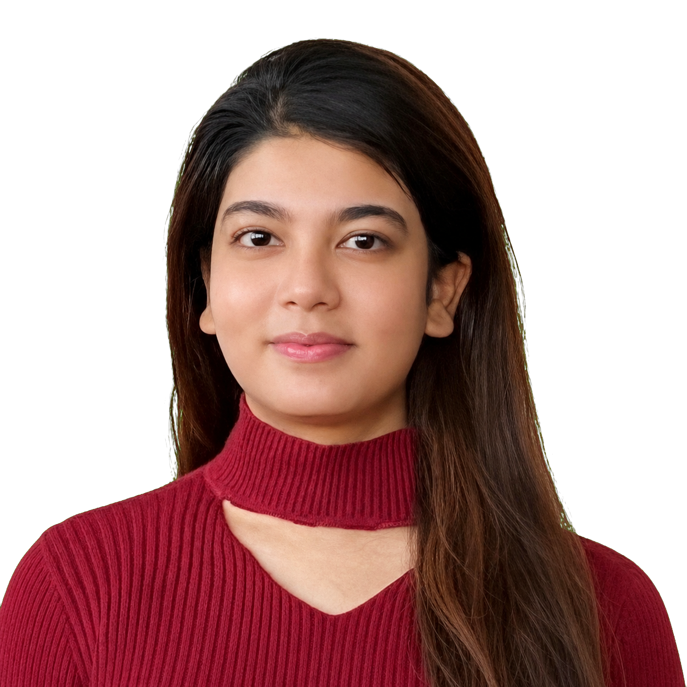

Hi, I’m
Anuska Singh.
Urban designer, planner, researcher & architect. I design places and experiences with people at the heart.
↓
01 / A LITTLE ABOUT ME
Still learning.....
Design is how I
pay attention.
I am interested in the places where people, systems, and culture meet. My practice moves between research, design, and storytelling to make complex things feel more human.
02 / MY WORKS
Ideas made tangible.
03 / EXPERIENCE
Planning, design, and research in practice.
04 / PROUD MOMENTS
Milestones along the way.
05 / ON PAPER
Published thoughts.
06 / PLACES I’VE BEEN
01countries
travelled
travelled
07 / LIFE
Beyond
drawings, maps,
& plans.
30.2M+views
across platforms
across platforms
20K+followers
across platforms
across platforms
700K+likes and little
moments shared
moments shared
A running record of experiments, adventures, and the little things worth noticing.